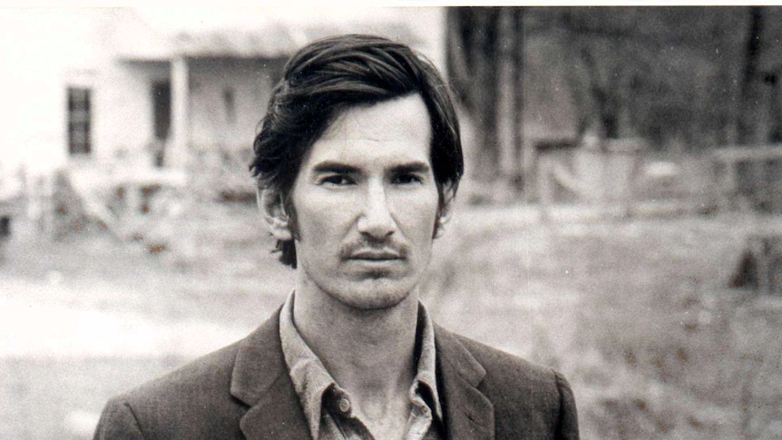

John Townes Van Zandt (March 7, 1944 – January 1, 1997) was an American singer-songwriter. He wrote numerous songs, such as "Pancho and Lefty", "For the Sake of the Song", "If I Needed You", "Tecumseh Valley", "Tower Song", "Rex's Blues", and "To Live Is to Fly", that are widely considered masterpieces of American songwriting. His musical style has often been described as melancholic and features rich, poetic lyrics. During his early years, Van Zandt was respected for his guitar playing and fingerpicking ability. Much of Van Zandt's life was spent touring various dive bars, often living in cheap motel rooms and backwoods cabins. For much of the 1970s, he lived in a simple shack without electricity or a telephone.
He suffered from a series of drug addictions and alcoholism, and was given a psychiatric diagnosis of bipolar disorder. When he was young, the now-discredited insulin shock therapy erased much of his long-term memory. Van Zandt died on New Year's Day 1997 from cardiac arrythmia caused by health problems stemming from years of substance abuse. A revival of interest in Van Zandt blossomed in the 2000s. During the decade, two books, a documentary film (Be Here to Love Me), and numerous magazine articles were written about him.